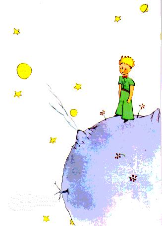
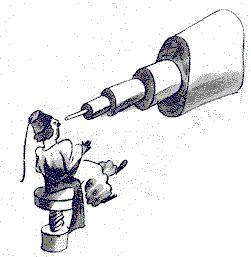
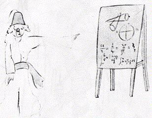
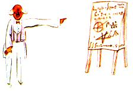

Fuair mé amach ón méid sin an dara rud a bhí an-tábhachtach: Is
é sin,an pláinéad as ar tháinig sé ní raibh sé mórán ní b'fhairsinge
ná teach!
Ní chuirfeadh sé sin mórán iontais orm. Bhí a fhios agam go
maith, seachas na pláinéid mhóra ar nós an Talaimh, Iúpatair,
Mharsa, Véineas, ar cuireadh ainmneacha orthu go bhfuil na
céadta eile ann atá chomh beag sin uaireanta go mbíonn sé an-
doiligh iad a fheiceáil leis an teileascóip. Nuair a aimsíonn
réalteolaí ceann acu seo, cuireann sé uimhir air in ionad ainm.
Mar shampla, tugann sé, abair, “astaróideach 3251” air.
Tá tuairim láidir agam gurb é an t-astaróideach B612 an
pláinéad arbh asdon phrionsa beag. Ní fhacthas an t-astaróideach
sin leis an teileascóip ach aon uair amháin, siar sa bhliain 1909,
agus réalteolaí
— Turcach a chonaic é.

Rinne sé
léirchruthú mór an t-
am sin ar an
bhfionnachtain sin
aige ag Comhdháil
Réalteolaíochta
Idirnáisiúnta. Ach
níor chreid duine ar
bith é as siocair éide
aisteach bheith air.
Bíonn na daoine fásta
mar sin...

Ar an dea-uair do
chlú an astaróidigh B
612, tháinig deachtóir
Turcach agus chuir sé
d'iachall ar mhuintir na
Tuirce éide Eorpach a
chaitheamh, faoi phian
bháis. Rinne an
réalteolaí seo a
léirchruthú arís sa
bhliain 1920 agus

culaithan-ealaíonta air.
Agus bhí gach duine ar
aon tuairim leis an babhta seo.
Is é an fáth ar thug mé an teolas seo daoibh fá dtaobh den
astaróideach B612 agus gur lig mé libh i modh rúin an uimhir atá
air, mar gheall ar na daoine fásta. Is breá le daoine fásta
uimhreacha. Nuair a insíonn tú dóibh faoi chara nua atá agat, ní
chuireann siad ceist ort ar chor ar bith faoi na rudaí is tábhachtaí.
Ní abrann siad leat in am ar bith: “Cén sórt guth atá aige? Cad iad
na cluichí is fearr leis?
An mbailíonn sé
féileacáin?” Fiafraíonn
siad díot: “Cén aois atá
aige? Cé mhéad
deartháir atá aige? Cén
mcáchan atá ann. Cén
tuarastal atá ag a athair?”

Go dtí sin, ní shíleann
siad go bhfuil aithne acu
air. Má deir tú le daoine
fásta: “Chonaic mé teach
álainn déanta de bhrící dearga,le bláthanna dearga sna fuinneoga
agus colúir ar an díon...”, ní féidir leo an teach a shamhlú dóibh
féin. Ní móra rá leo: “Chonaic mé teach a chosnaíonn céad míle
punt.” Ansin déarfaidh siad go beo: “Nach bhfuil sé sin go deas!”
Mar sin, má deir tú leo: “Is é a chruthaíonn go raibh an prionsa
beag ann go raibh sé go hálainn, go raibh sé ag gáire, go raibh
caora ag teastáil uaidh. Nuair a theastaíonn cara uait, cruthaíonn
sé sin go bhfuil sé ann”, bainfidh siad searradh as a nguaillí agus
déarfaidh siad go bhfuil sin páistiúil! Ach má deir tú leo: “Is é an
pláinéad arbh as dó an t-astaróideach B 612” beidh siad sásta
ansin, agus ligfidh siad duitlena gcuid ceisteanna. Sin é an dóigh
a bhfuil siad. Ní ceart bheith ina dhiaidh orthu. Caithfidh páistí
bheith an-bhoigéiseach tuigbhealach le daoine fásta.
Ach ar ndóigh, muidinne a thuigeann an saol, is beag orainn
uimhreacha! Ba bhreá liom tosú ar an eachtra seo mar a bheadh
síscéal ann. Ba mhaith liom a rá:
“Fadó, fadó, bhí prionsa beag ann a bhí ina chónaíar phláinéad
nach raibh mórán níos mó ná é féin, agus a raibh cara de dhíth
air...” Do dhuine arbith a thuigeann an saol, bheadh i bhfad níos
mó de chuma na fírinne air sin.
Mar ní maith liom daoine bheith ag léamh mo leabhair ar nós
cuma liom. Is mór an crá croí dom na cuimhní cinn seo a insint.
Tá sé sé bliana ó shin cheana féin ó d'imigh mo chara leis, é féin
agus an chaora. Má tá mé ag iarraidh cur síos a dhéanamh air, tá
mé á dhéanamh sa dóigh nach ndéanfaidh mé dearmad air. Is
bocht an scéal é dearmad a dhéanamh ar chara. Chan gach duine
a raibh cara aige. Agus d'fhéadfainn tiontú amach ar nós na
ndaoine fásta, nach bhfuil spéis acu a thuilleadh ach sna figiúirí.
Sin é an fáth fosta ar cheannaigh mé bosca dathanna agus
pionsailí. Tá sé crua toiseacht ar an líníocht arís san aois a bhfuil
mise, go háirithe nuair nach ndearna mé iarracht ar bith seachas
boa dúnta agus boa oscailte, agus sin in aois mo shé bliana dom!
Ar ndóigh, féachfaidh mé le portráidí a dhéanamh a bheas
chomh cosúil leis agus is féidir. Ach níl mé cinnte ar fad go n-
éireoidh liom. Beidh pictiúr amháin ceart go leor, agus an dara
ceann,ní bheidh sé cosúil leis ar chor ar bith. Ním botúin chomh
maith fá dtaobh den airde a bhí ann. Sa cheann sin tá an prionsa
beag rómhór. Sa cheann cile sin tá sé róbheag. Tá mé in amhras
chomh maith faoin dath a bhí ar a chulaith. Bím ag gliúmáil liom
mar sin chomh maith agus is féidir liom. Beidh dul amú orm i
ndeireadh na dála faoin chuid de na mionsonraí is tábhachtaí.
Ach caithfidh sibh é sin a mhaitheamh dom. Ní thugadh mo
chara míniú dom in am ar bith. B'fhéidir gur chreid sé go raibh
mise cosúil leis féin. Ach faraor, níl mise in ann caoirigh a
fheiceáil taobh istigh de chófraí. D'fhéidir go bhfuil mé cosúil le
daoine fásta. Caithfidh go bhfuil mé ag dul in aois.